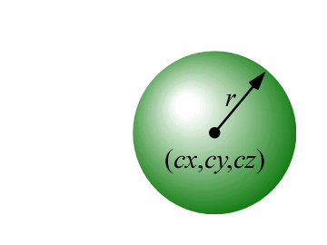
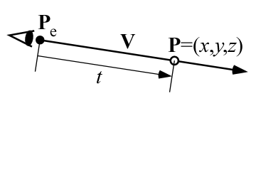
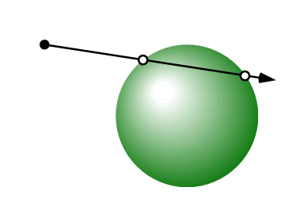
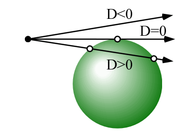
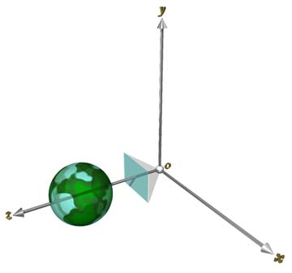
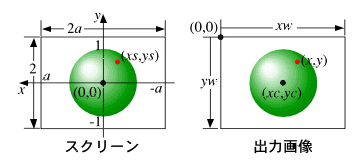
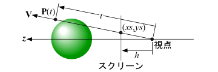
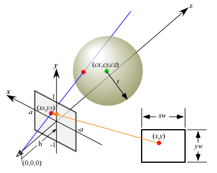

最初に，球をレイトレーシングで描画することを考えます． 中心が Pc = (cx, cy, cz) にあり，半径が r の球の方程式を求めてください．

いま視点が Pe = (ex, ey, ez) の位置にあり，視線は V = (vx, vy, vz) の方向を向いているとします．

この視線の方程式を媒介変数 t を用いて表してください
x = ? y = ? z = ?
この視線が球と交差するかどうかを調べます．

視線の方程式を球の方程式に代入し， At2 + 2Bt + C = 0 という形に変形してください． この係数 A, B, C を求めてください．
A = ? B = ? C = ?
視線が球と交差するかどうかは， この２次方程式が解を持つかどうかで判断できます． ２次方程式が解を持つかどうかは， 次の判別式によって調べることができます．
D = B2 - A * C
この D が負であれば，この２次方程式は解を持ちません． これは視線が球と交点を持たないことを意味します． この D が 0 であれば，この２次方程式は１つの解を持ちます． これは視線が球と１点で接していることを意味します． この D が正であれば，この２次方程式は２つの解を持ちます． これは視線が球と２点で交差することを意味します．

そこで課題０１で作成した関数 trace() を，視点の位置 Pe と視線の方向 V を引数にして， この視線が球と交差するかどうかを判定し， 交差していれば引数 col に白色を， 交差していなければ青色を設定するよう変更してください．
void trace(const float *pe, const float *v, float *col)
{
/*
** 視線が球と交差していれば col に白，
** 交差していなければ col に青を設定する
*/
}
なお，球のデータは Sphere という構造体の変数 sphere の要素 p に中心位置 Pc = (cx，cy，cz)， 要素 r に半径 r を格納するものとします．
struct Sphere {
float p[3]; /* 球の中心位置 Pc */
float r; /* 球の半径 r */
};
/*
** 球のデータ
*/
struct Sphere sphere = {
{ 0.0, 0.0, 4.0 },
2.0,
};
次に，下図のような右手座標系において， 視点は原点にあり，Ｚ軸の正の方向を向いているとします． またスクリーンは高さ 2，幅 2a の大きさで， その中心をＺ軸が垂直に貫いているとします． a はスクリーンのアスペクト比です．

このスクリーンを通して， 視点の反対側（Ｚ軸上正の方向）の空間を見た画像の作成について考えます． このスクリーンを視点側から見ると， 下図の左のように見えます．

このスクリーンの左端の位置は a，右端の位置は -a，上端の位置は 1，下端の位置は -1 です． このスクリーンを通して見えるシーンを， 同図右のように幅 xw，高さ yw の画像として出力します． スクリーンの中心は，出力画像の (xw/2, yw/2) の位置にあります． この位置を (xc, yc) とします．
この条件で，出力画像上の点 (x,y) に対応する， スクリーン上の点 (xs, ys) を求めてください．
xs = ? ys = ?
この視点から出てスクリーン上の１点を通る半直線， すなわち視線を求めます．

視点は原点にありますから，Pe = (0, 0, 0) です．そこで，視点とスクリーンの距離を h として， 原点にある視点とスクリーン上の１点 (xs, ys) を通る直線の方向ベクトル（視線ベクトル） V = (vx, vy, vz) を求めてください．
vx = ? vy = ? vz = ?
以上をもとに，

視点の位置 Pe と視点とスクリーンの距離 h は，それぞれ Camera という構造体の変数 camera の要素 p と要素 h に格納するものとします．
struct Camera {
float p[3]; /* 視点の位置 Pe */
float h; /* 視点とスクリーンの距離 h */
};
/*
** 視点のデータ
*/
struct Camera camera = {
{ 0.0, 0.0, 0.0 },
1.0,
};